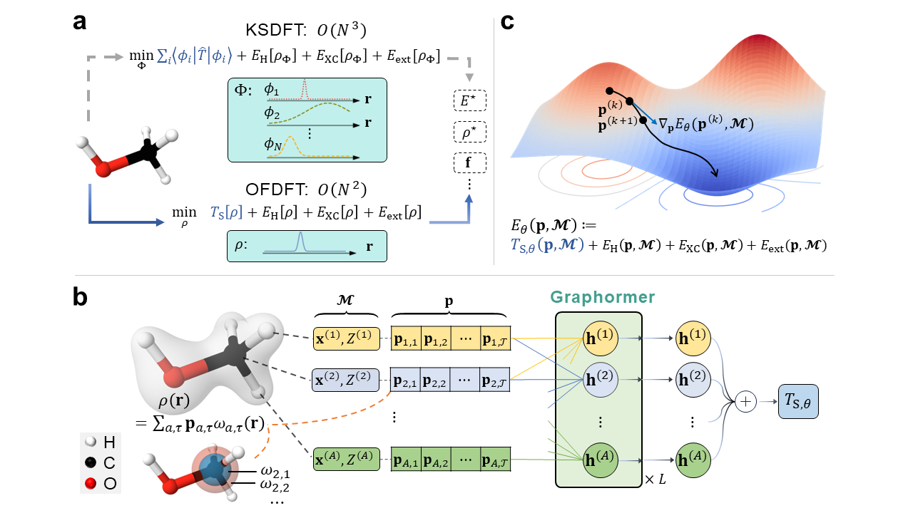

Research Works
The following badges are used for according purpose:


Biology
BIB-2022
SPRoBERTa: Protein Embedding Learning with Local Fragment Modeling


SPRoBERTa is a protein embedding learning model that leverages local fragment modeling to capture the local structure of proteins.
Lijun Wu#, Chengcan Yin, Jinhua Zhu, Zhen Wu, Liang He,Yingce Xia, Shufang Xie, Tao Qin, Tie-Yan Liu
Arxiv-2021
Pre-training Co-evolutionary Protein Representation via A Pairwise Masked Language Model


PMLM is a pairwise masked language model that pre-trains protein representations by co-evolving the protein sequence and structure.
Liang He, Shizhuo Zhang, Lijun Wu, Huanhuan Xia, Fusong Ju, He Zhang, Siyuan Liu, Yingce Xia, Jianwei Zhu, Pan Deng, Bin Shao, Tao Qin, Tie-Yan Liu
NeurIPS-2021
Co-evolution Transformer for Protein Contact Prediction


Co-evolution Transformer is a novel Transformer architecture for extracting co-evolution information from multiple sequence alignments (MSAs), which can improve the performance of protein contact prediction.
He Zhang, Fusong Ju, Jianwei Zhu, Liang He, Bin Shao#, Nanning Zheng#, Tie-Yan Liu
Drug Discovery
BIB-2023
SMT-DTA: Breaking the barriers of data scarcity in drug–target affinity prediction


SMT-DTA is a novel drug–target affinity prediction model that breaks the barriers of data scarcity by leveraging the semi-supervised multi-task training strategy.
Qizhi Pei, Lijun Wu#, Jinhua Zhu, Yingce Xia, Shufang Xie, Tao Qin, Haiguang Liu, Tie-Yan Liu, Rui Yan#
NeurIPS-2023
FABind: Fast and Accurate Protein-Ligand Binding


FABind is a fast and accurate protein-ligand binding model that achieves state-of-the-art performance by leveraging a novel FABind layer design and several rational strategies.
Qizhi Pei, Kaiyuan Gao, Lijun Wu#, Jinhua Zhu, Yingce Xia, Shufang Xie, Tao Qin, Kun He, Tie-Yan Liu, Rui Yan#
Arxiv-2024
FABind+: Enhancing Molecular Docking through Improved Pocket Prediction and Pose Generation


FABind+ is an improved version of FABind, which not only achieves better performance by designing more rational pocket prediction method but also extend to be a sampling docking model by leveraging a simple and effective sampling strategy.
Kaiyuan Gao, Qizhi Pei, Jinhua Zhu, Tao Qin, Kun He, Lijun Wu#
ICML-2023
Retrosynthetic Planning with Dual Value Networks


PDVN is a retrosynthetic planning model that leverages dual value networks to generate high-quality and diverse retrosynthetic routes.
Guoqing Liu, Di Xue, Shufang Xie, Yingce Xia, Austin Tripp, Krzysztof Maziarz, Marwin Segler, Tao Qin#, Zongzhang Zhang, Tie-Yan Liu
KDD-2022
RetroGraph: Retrosynthetic Planning with Graph Search


RetroGraph is a retrosynthetic planning model that leverages graph search to generate high-quality and diverse retrosynthetic routes.
Shufang Xie, Rui Yan#, Peng Han#, Yingce Xia, Lijun Wu, Chenjuan Guo, Bin Yang, Tao Qin
ICLR-2023
O-GNN: incorporating ring priors into molecular modeling


O-GNN is a novel molecular modeling model that incorporates ring priors into the graph neural network to improve the performance of molecular property prediction.
Jinhua Zhu, Kehan Wu, Bohan Wang, Yingce Xia#, Shufang Xie, Qi Meng, Lijun Wu, Tao Qin, Wengang Zhou, Houqiang Li, Tie-Yan Liu
ICLR-2023
MiCaM: De Novo Molecular Generation via Connection-aware Motif Mining


MiCaM is a novel de novo molecular generation model that leverages connection-aware motif mining to generate diverse and high-quality molecules.
Zijie Geng, Shufang Xie#, Yingce Xia, Lijun Wu, Tao Qin, Jie Wang#, Yongdong Zhang, Feng Wu, Tie-Yan Liu
TMLR-2022
Direct molecular conformation generation


DMCG is a direct molecular conformation generation model that generates molecular conformations directly from SMILES strings.
Jinhua Zhu, Yingce Xia#, Chang Liu#, Lijun Wu, Shufang Xie, Tong Wang, Yusong Wang, Wengang Zhou, Tao Qin, Houqiang Li, Tie-Yan Liu
KDD-2023
Pre-training Antibody Language Models for Antigen-Specific Computational Antibody Design


AbGNN is a pre-training antibody language model that learns antigen-specific antibody representations for computational antibody design.
Kaiyuan Gao, Lijun Wu#, Jinhua Zhu, Tianbo Peng, Yingce Xia, Liang He, Shufang Xie, Tao Qin, Haiguang Liu, Kun He, Tie-Yan Liu
KDD-2023
Dual-view Molecular Pre-training


DVMP is a dual-view molecular pre-training model that learns molecular representations by jointly pre-training on graph and sequence molecular data.
Jinhua Zhu, Yingce Xia#, Tao Qin, Wengang Zhou, Houqiang Li, Tie-Yan Liu
KDD-2022
Unified 2D and 3D Pre-Training of Molecular Representations


A unified molecule pre-training model that learns molecular representations by jointly pre-training on 2D and 3D molecular data.
Jinhua Zhu, Yingce Xia#, Lijun Wu, Shufang Xie, Tao Qin, Wengang Zhou, Houqiang Li, Tie-Yan Liu
LLM4Science
Arxiv-2024
BioT5+: Towards Generalized Biological Understanding with IUPAC Integration and Multi-task Tuning


BioT5+ is a pre-trained language model that integrates IUPAC nomenclature and multi-task tuning to achieve generalized biological understanding, which is an extension of BioT5.
Qizhi Pei, Lijun Wu#, Kaiyuan Gao, Xiaozhuan Liang, Yin Fang, Jinhua Zhu, Shufang Xie, Tao Qin, Rui Yan#
EMNLP-2023
BioT5: Enriching Cross-modal Integration in Biology with Chemical Knowledge and Natural Language Associations


BioT5 is a pre-trained language model that enriches cross-modal integration in biology with chemical knowledge and natural language associations.
Qizhi Pei, Wei Zhang, Jinhua Zhu, Kehan Wu, Kaiyuan Gao, Lijun Wu#, Yingce Xia#, Rui Yan#
ACL-2023
MolXPT: Wrapping Molecules with Text for Generative Pre-training


MolXPT is a generative pre-training model that wraps molecules with text to learn molecular representations and generate molecular structures.
Zequn Liu, Wei Zhang, Yingce Xia#, Lijun Wu, Shufang Xie, Tao Qin, Ming Zhang#, Tie-Yan Liu
ICLR-2024
Mol-Instructions: A Large-Scale Biomolecular Instruction Dataset for Large Language Models


Mol-Instructions is a large-scale biomolecular instruction dataset that provides detailed instructions for various biomolecular tasks, which can be used to pre-train large biomolecule language models.
Yin Fang, Xiaozhuan Liang, Ningyu Zhang#, Kangwei Liu, Rui Huang, Zhuo Chen, Xiaohui Fan, Huajun Chen#
Arxiv-2024
Leveraging Biomolecule and Natural Language through Multi-Modal Learning: A Survey


This survey paper reviews the recent advances in leveraging biomolecule and natural language through multi-modal learning for various biological tasks.
Qizhi Pei, Lijun Wu#, Kaiyuan Gao, Jinhua Zhu, Yue Wang, Zun Wang, Tao Qin, Rui Yan#
NeurIPS-2023
De novo Drug Design using Reinforcement Learning with Multiple GPT Agents


MolRL-MGPT is a de novo drug design model that leverages reinforcement learning with multiple GPT agents to generate diverse and high-quality molecules.
Xiuyuan Hu, Guoqing Liu#, Yang Zhao, Hao Zhang#
Arxiv-2023
The impact of large language models on scientific discovery: a preliminary study using gpt-4


This paper studies the impact of large language models on scientific discovery using GPT-4, and provides a preliminary analysis of the potential of LLMs in scientific research.
Microsoft Research AI4Science, Microsoft Azure Quantum
Computation Chemistry
NeurIPS-2023
Efficiently incorporating quintuple interactions into geometric deep learning force fields


QuinNet is a geometric deep learning force field that efficiently incorporates quintuple interactions to improve the accuracy of molecular dynamics simulations.
Zun Wang, Guoqing Liu, Yichi Zhou, Tong Wang, Bin Shao
Nature Communication-2024
Enhancing geometric representations for molecules with equivariant vector-scalar interactive message passing


VisNet is a geometric deep learning model that enhances geometric representations for molecules with equivariant vector-scalar interactive message passing, which improves the performance of molecular dynamics simulations.
Yusong Wang, Tong Wang#, Shaoning Li, Xinheng He, Mingyu Li, Zun Wang, Nanning Zheng, Bin Shao, Tie-Yan Liu
Nature Computational Science-2024

Overcoming the barrier of orbital-free density functional theory for molecular systems using deep learning


M-OFDFT is a deep learning implementation of orbital-free density functional theory (OFDFT) that achieves DFT-level accuracy on molecular systems with lower cost complexity, and can extrapolate to much larger molecules than those seen during training.
He Zhang, Siyuan Liu, Jiacheng Liu, Chang Liu#, Shuxin Zheng#, Ziheng Liu, Tong Wang, Nanning Zheng, Bin Shao#
Arxiv-2024
Self-consistency training for Hamiltonian prediction

The paper reveals that Hamiltonian prediction possesses a self-consistency principle, and hence proposes an extact variational training method without labeled data.
He Zhang, Chang Liu, Zun Wang, Xinran Wei, Siyuan Liu, Nanning Zheng, Bin Shao, Tie-Yan Liu
ICLR-2024
Long-Short-Range Message-Passing: A Physics-Informed Framework to Capture Non-Local Interaction for Scalable Molecular Dynamics Simulation


We proposed a long-range short-range message-passing framework to capture non-local interactions and demonstrate the state-of-the-art results with up to 40% error reduction for molecules in MD22 and Chignolin datasets.
Yunyang Li, Yusong Wang, Lin Huang, Han Yang, Xinran Wei, Jia Zhang, Tong Wang, Zun Wang, Bin Shao, Tie-Yan Liu
PDE
ICLR-2024
Better Neural PDE Solvers Through Data-Free Mesh Movers


DMM is a data-free mesh mover that can improve the performance of neural PDE solvers by learning the mesh movement strategy, which can be embedded into the neural PDE solver through proper architectural design, called MM-PDE.
Peiyan Hu, Yue Wang, Zhi-Ming Ma
ICML-2023
NeuralStagger: Accelerating Physics-constrained Neural PDE Solver with Spatial-temporal Decomposition

NeuralStagger is a physics-constrained neural PDE solver that accelerates the convergence of PDE solvers by spatial-temporal decomposition.
Xinquan Huang, Wenlei Shi, Qi Meng, Yue Wang, Xiaotian Gao, Jia Zhang, Tie-Yan Liu


Members
(ordered by last name)
- Kaiyuan Gao, Huazhong University of Science and Technology
- Xiaozhuan Liang, Zhejiang Univeristy
- Chang Liu,
 Microsoft Research AI4Science
Microsoft Research AI4Science - Guoqing Liu, Microsoft Research AI4Science
- Qizhi Pei, Renmin University of China
- Lijun Wu, Microsoft Research AI4Science
- Yue Wang, Microsoft Research AI4Science
- Zun Wang, Microsoft Research AI4Science
- Yingce Xia, Microsoft Research AI4Science
- Shufang Xie, Microsoft Research AI4Science
- He Zhang, Xi'an Jiaotong Univeristy
- Jinhua Zhu, University of Science and Technology of China